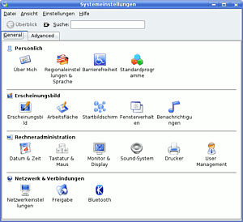
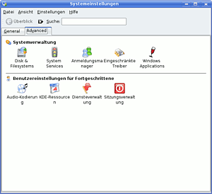

Wiki
Mitmachen
- Wikiartikel anlegen
- Howto anlegen
- Wiki-Referenz
- Wiki-Syntax
- Baustellen
- Artikelideen
- Ungetestete Artikel
- Ausbaufähige Artikel
- Fehlerhafte Artikel
- Rund ums Wiki
Konfiguration
- Backlinks anzeigen
- Exportieren
KDE Systemeinstellungen
Archivierte Anleitung
Dieser Artikel wurde archiviert, da er - oder Teile daraus - nur noch unter einer älteren Ubuntu-Version nutzbar ist. Diese Anleitung wird vom Wiki-Team weder auf Richtigkeit überprüft noch anderweitig gepflegt. Zusätzlich wurde der Artikel für weitere Änderungen gesperrt.
Anmerkung: Dieser Artikel ist veraltet, eine Alternative ist der Artikel KDE Systemeinstellungen
Zum Verständnis dieses Artikels sind folgende Seiten hilfreich:
Kubuntu besitzt zur Konfiguration des Systems standardmäßig ein einfaches Programm, das sich auf die wichtigsten Einstellungsdialoge fixiert und diese in der Übersicht als große Symbole darstellt. Es lässt sich via "K-Menü -> Systemeinstellungen" oder über den Befehl systemsettings starten [1]. Dort kann man von Systemeinstellungen wie der Benutzerverwaltung, Netzwerkeigenschaften oder der Druckereinrichtung bis hin zu individuellen Einstellungen wie dem Aussehen der Fenster oder des Desktophintergrundes einstellen. Diese Liste soll einen kurzen Überblick geben, wo welche Einstellungen zu finden sind.
Hinweis:
Das KDE-Kontrollzentrum kann ebenfalls zum Konfigurieren des Systems verwendet werden. Dieses bereitet die gleichen Informationen anders auf und bietet darüber hinaus weitere Einstellungsmöglichkeiten. Nähere Informationen gibt es hier.
|  |  |
| General | Advanced |
General¶
| Persönlich | |
| "Über Mich" | Informationen zum Benutzer eintragen. Diese Informationen wie Name, Mail-Adresse usw. werden auch von anderen KDE Programmen genutzt. |
| "Regionaleinstellungen & Sprache" | Installation von weiteren Sprachen, Konfiguration von Spracheinstellungen sowie Festlegung von Tastaturlayouts. |
| "Barrierefreiheit" | Einstellungen um die Bedienung des Systems auf Menschen mit Behinderungen zu optimieren. |
| "Standardprogramme" | Definition von Standardprogrammen für E-Mails, Editor, Instant Messenger, Terminal und Webbrowser. |
| Erscheinungsbild | |
| "Erscheinungsbild" | Das Aussehen der kompletten KDE Desktopumgebung an die eigenen Wünsche anpassen. |
| "Arbeitsfläche" | Hintergrundbilder, Bildschirmschoner und virtuelle Desktops sowie verschiedene Optionen einrichten. |
| "Startbildschirm" | KDE Splash-Screen auswählen sowie neue Splash-Screens installieren. |
| "Fensterverhalten" | Verschiedenste Optionen zum Umgang mit Fenstern. Unter anderem lassen sich das Aktivierungsverhalten, das Verhalten bei Mausklicks, Animationen, Transparenz und vieles mehr einstellen. |
| "Benachrichtigungen" | Klänge bei verschiedenen Aktionen abspielen. |
| Rechneradministration | |
| "Datum & Zeit" | Datum, Uhrzeit sowie die Zeitzone einstellen. Ebenso ist es hier möglich einen NTP-Zeitserver einzutragen, mit dem die Uhrzeit des Systems angeglichen werden soll. |
| "Tastatur & Maus" | Tastaturparameter wie Wiederholrate und Verzögerung, Tastenkürzel, sowie die Maus und Mauszeiger einstellen. |
| "Monitor & Anzeige" | Bildschirmauflösung, Farbwerte und Energiesparoptionen einrichten. |
| "Sound-System" | Verschiedene Optionen zur Audio-Ausgabe des Systems. |
| "Drucker" | Drucker verwalten und hinzufügen mit CUPS |
| "User Management" | Benutzer und Gruppen des Systems verwalten. |
| Netzwerk & Verbindungen | |
| "Netzwerkeinstellungen" | Netzwerkkarten einrichten, IP-Adresse wechseln, Proxy-Server angeben sowie zahlreiche weitere Optionen rund um Netzwerkeinstellungen. |
| "Freigabe" | Netzwerkfreigaben erstellen bzw. Freigaben im System einbinden. Mehr dazu unter Samba bzw. NFS. |
| "Bluetooth" | Bluetooth-Dienste einrichten und Bluetooth-Geräte anbinden. |
Advanced¶
| Systemverwaltung | |
| "Disk & Filesystems" | Festplatten in das System einbinden. |
| "System Services" | Systemdienste einrichten und konfigurieren. |
| "Anmeldungsmanager" | Den KDM Displaymanager einrichten. |
| "Eingeschränkte Treiber" | Verwaltung für proprietäre Kernelmodule mit dem restricted-manager. |
| "Windows Applications" | Hier können Einstellungen zu Wine vorgenommen werden, sofern es installiert ist. |
| Benutzereinstellungen für Fortgeschrittene | |
| "Audio-Kodierung" | Vorgaben zum Kodieren von Multimedia-Inhalten eintragen. Diese Einstellungen können von anderen KDE Programmen genutzt werden. |
| "KDE-Ressourcen" | Ressourcen wie Kontakte, Notizen oder Kalender definieren, so dass sie von anderen KDE Anwendungen genutzt werden können. |
| "Diensteverwaltung" | KDE eigene Dienste konfigurieren. |
| "Sitzungsverwaltung" | Optionen und Einstellungen zur eigenen KDE Sitzung. |
Diese Revision wurde am 6. Juni 2011 21:28 von kaputtnik erstellt.
- Erstellt mit Inyoka
-
 2004 – 2017 ubuntuusers.de • Einige Rechte vorbehalten
2004 – 2017 ubuntuusers.de • Einige Rechte vorbehalten
Lizenz • Kontakt • Datenschutz • Impressum • Serverstatus -
Serverhousing gespendet von